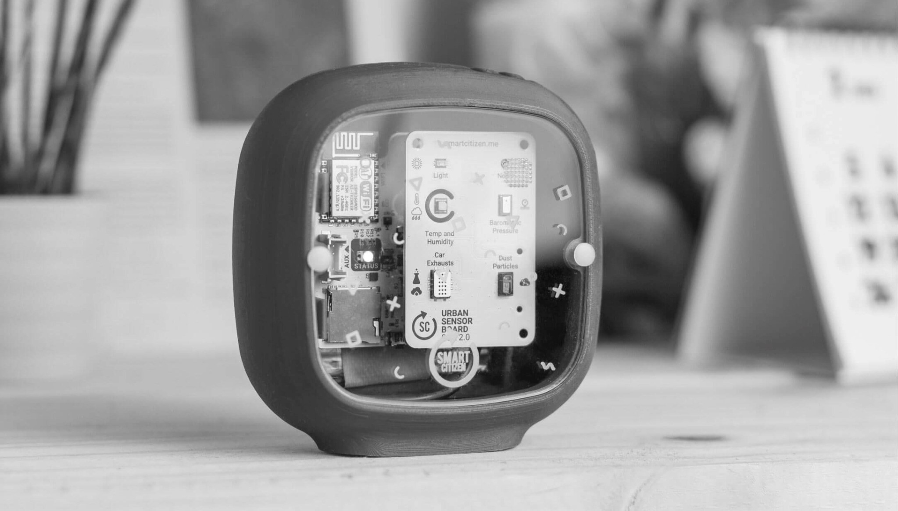

/INPUT_devices
(26_april_2022)
The FabAcademy class after the holidays focused on the topic of Input Devices. Three weeks ago
we talked about outputs (speakers, motors, lights, etc.) and this week was the turn of inputs or
explained in another way, the information our circuit receives from the external agents.
When we talk about inputs, we can summarize them in just one word: sensors. A sensor can be a
button, a resistor, a microphone, or many other things. What makes it an input device is that
it gets information from the exterior and transforms it into a numeric value (generally).
Digital sensors, for example, get information that translates into 1 or 0, YES or NO, True or
False. On the other hand, analog sensors can read more values and translate them from voltage to
another scale. There are many protocols to transform the input we get from the sensors into
information readable by our programs, they are called digital communication protocols.

The most important part of inputs, however, is the way we process the information we are getting.
Each sensor has its properties and settings based on libraries and the way they are built. We need
to know in which way we are receiving the data in order to process it meaningfully. It's not
the same to process a sound input or image one. The way we display or use the information is
what gives value to the sensors themselves.
During the second part of the session, we took a look to how to fabricate our own sensors in a
DIY way. We saw some examples of fabricating a force sensitive resistor, a shock sensor, a plant
moisture sensor and some others.